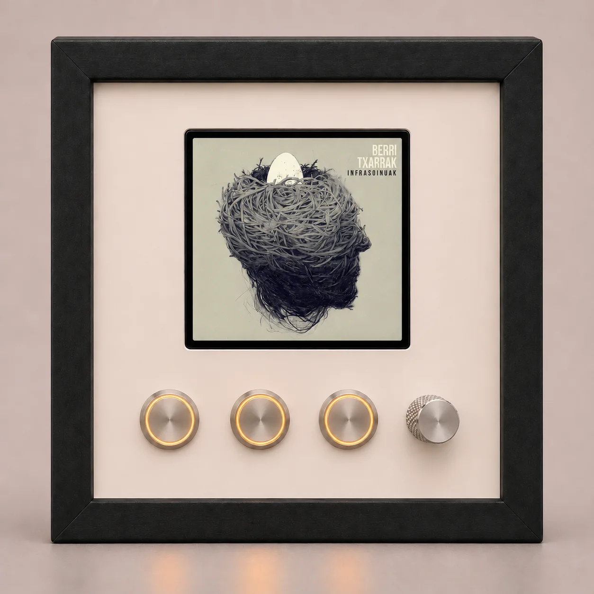

OBJETO INTERACTIVO · DEMOSTRACIÓN
Así podría sonar
tu cuadro.
Las selecciones y sus portadas se consultan para el ID indicado. Pulsa sus botones para escuchar aquí; la maqueta no manda órdenes al ESP32.
Abre esta maqueta desde un enlace con el ID del cuadro.

SONORO.Conecta un cuadro para cargar su portada
Escanea para elegir tu música
20 s